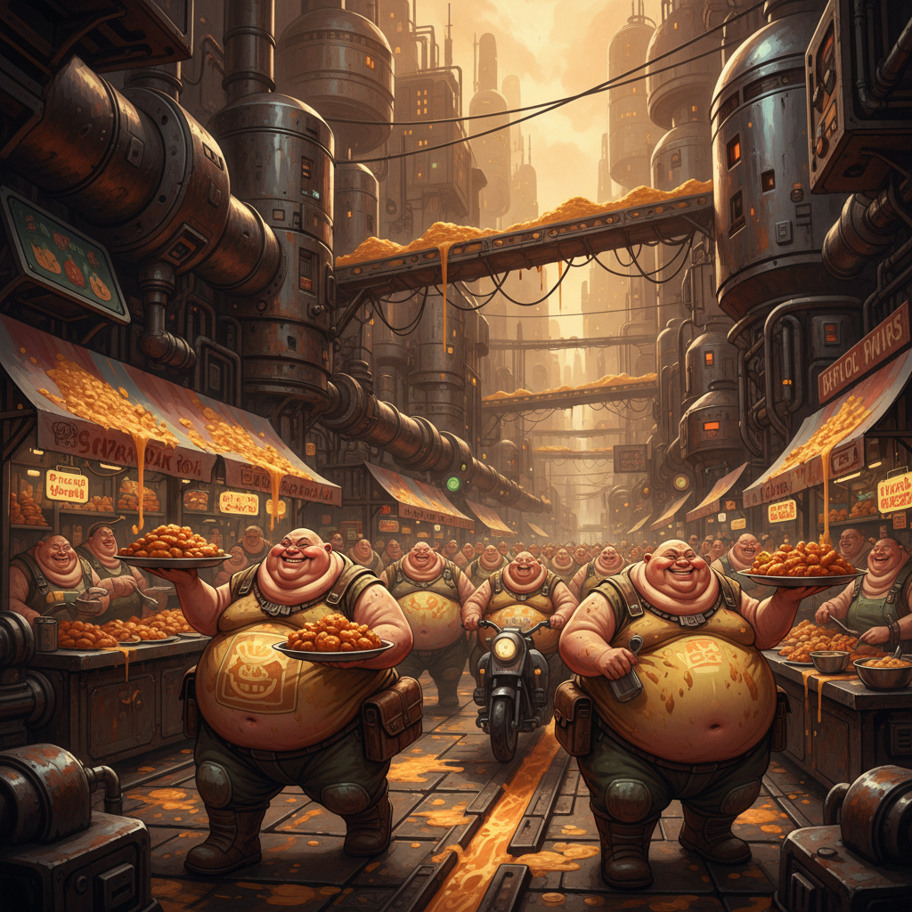

The Full Lore and History Of Obecity
Let's start with what Obecity is
Obecity is an island nation that resides within the lore just next to Monke Kingdom and Shlange Island
It is exactly what you think it is, a city full of fat people
Here are all the rulers of Obecity and a bit of infromation about them
First, The Fatass Dynasty
John Fatass
He founded Obecity in 1684 when he first came from Leeds. He found the portal from the real world into the lore and claimed a lonely island in between Shlange Island and Monke Kingdom.
This land would become Obecity. He moved lots of people all around the world here as there were tons of food and no real big threats. He didn't fight any wars with Obecity and always kept peace within the region.
in 1691, John Fatass suffered a heart attack and died at age 37. He only had 2 heirs to the throne who was his 14 year-old son and his 13 month old son.
John Fatass II
He was the heir of John Fatass I and became the king of Obecity at just 15 years-old. In his time as king he did not do much, however he did begin construction
on the underground part of Obecity which would become the main industrial power plant and money export of Obecity. It would not be finished in his reign however, and would take
a further 45 years to finish. John Fatass II died in 1712 at age 35.
Mark Fatass
Mark Fatass became the king of Obecity in 1712 at age 22 and he managed to make quite a few changes. Firstly, he took many of the surrounding small islands around Obecity into Obecitian territory.
With this he took many slaves and sold them to Shlange island. He also finished the underground part of Obecity and built the factories that would later make Obecity extremely wealthy. He also discovered
Shlange island and started to trade with the Lord Shlange himself. He died in 1784 at age 94 being the oldest king in Obecitian history.
Wolfgang Fatass
Wolfgang Fatass was the great-nephew of Mark Fatass and became king of Obecity after Mark because he had no children. He became king at age 35 in the year 1784. He did not do much for Obecity however he started
importing many drugs from Shlange Island. This really impacted the Obecitian economy and it started making many criminals in the underground section which is why it is still to this day not an ideal place to live in.
Wolfgang died in 1807 at age 58 but the mess he made would take years to clean up.
Jackson Fatass
Jackson Fatass became king of Obecity in 1807 at age 19 and had a big mess to clean up. He was only king for 3 years as he truly lived a luxurious lifestyle. He spend much of the Obecitian economy,
that was already crippling, on parties for the wealthy and he spent much of the money on useless things which he threw away a few days after purchase. He was assassinated in 1810 and left Obecity in
an even bigger mess then it was already in.
Edward Fatass
Edward Fatass became king of Obecity at age 17 and was one of the greatest rulers of Obecity. Firstly, he built more factories and started some of the first Obecitian charities ever. Poverty rates declined and there were many more homes built so
home prices went down. He also built many more factories which grew the Obecitian economy and Obecity became the richest nation in the lore. he also invented the fat chip which prevents Obecitians from dying of
diseases related to Obesity such as Cardiovascular Disease and Cirrhosis. He died in 1870 at age 80.
Edward Fatass II
Edward Fatass II became king of Obecity at age 23. Like John Fatass II, he did not do much. He did make Obecity
fight in WW1 and lost the battle to Fat City. The leader of Fat City, CaseOh I, became the new king of Obecity,
and he dethroned and executed Edward II in 1918.
The CaseOh Dynasty
This is a 106 year period where 8 rulers would take over Obecity. This
is often referred to as the dark ages of Obecity because the Obecitian
economy and moral of the people would cripple.
CaseOh I
CaseOh I became king of Obecity in 1918 at age 38. He was widely considered the start
of the end. Firstly, he opened up many drug import stations from Shlange island and fat
city in Obecity. This ended up using so much money some Obecitians were left skinny
and could not afford basic food. Also, all CaseOh rulers could eat 1000x more then
the people of the Fatass dynasty. This meant they ate so much food, the prices rose
much more then they should have, causing mass famine. CaseOh I died in 1930 at age
42. He made a prophecy that all CaseOh rulers must have the first name Caseoh followed
by the number of their rule e.g. CaseOh II
CaseOh II
CaseOh II became king of Obecity in 1930 at age 17. He managed to crumble Obecity
even more then his father. Firstly, he tried to use the drugs that his father had
bought into medicine thinking that it would be a good medical cure to his wife's
still unknown disease. With this, he had no luch and his wife died later that year.
He fell into a deep depression and started selling his "cures" to the public.
This caused many people to die and many families heartbroken. It did make him rich
and with the money he bought more drugs, eventually dying from an overdose in 1940
at age 27.
CaseOh III
CaseOh III became king of Obecity in 1940 at age 7 being the youngest king of Obecity ever.
This does not mean he was intelligent however as he followed in his father's footsteps.
He opened even more drug imports which made Obecity even poorer. Most of his decisions
were made by his uncle but he did not like a child being a ruler of Obecity so
CaseOh III was assassinated at age 9 and his uncle took over.
CaseOh IV
CaseOh IV was widely considered the 2nd worst king in Obecitian history. He became
king in 1942 at age 25. Firstly, he was extremely misogynistic and would often kill
random women just for fun. he also had many slaves which he would force to do
all his dirty work for him. He also made many laws like speeding, public executions
and even manslaughter legal. Many attempts to assassinate him all failed and he
continued his evil reign. Unitl one day in 1964 someone managed to remove his chip
and because he was so Obese he died of a heart attack at age 47.
CaseOh V
CaseOh V became king of Obecity in 1964 at age 23. He only ruled Obecity for 1 year
before dying of an overdose in 1965. The only major thing he did was probably try
to kill the first siren of Pizza Island in which he failed.
CaseOh VI
CaseOh VI became king of Obecity in 1965 at age 20. he was the brother of CaseOh V
and he was just as stupid. In 1967 he invaded Vegetable Kingdom and lost around 100000
soldiers. In 1979 he invaded Fruit Kingdom and lost again almost being killed in the fight.
finally, in 1983 he invaded Vegetable Kingdom again with just 100 soldiers. He had also
been high during the expedition and took a small plane to the island. He was shot down
immediately and died along with all the soldiers at age 38.
CaseOh VII
CaseOh VII became king of Obecity in 1983 at age 21. He had been left a big mess
to clean up however he promised he would do it. He was not like the other CaseOh rulers.
He did not dictate and he actually made Obecity a better place. He closed all drug stations,
he made many laws illegal again and he did what the people wanted. He was the most loved king
in Obecity yet and when he had a son people were relieved to know his bloodline would
continue and the dark ages seemed over. Little did they know that his son would be the most
evil king. He wanted Obecity to suffer under the rule of Fat City where his origins were already from.
in 2014, his son killed CaseOh VII who was age 52. The dark ages were far from over.
CaseOh VIII
CaseOh VIII became king of Obecity in 2014 at age 20 and quickly became the worst king of
Obecity. He was a strong supporter of Fat City and had one goal. To destroy Obecity and
everything associated with it. Firstly, he told everybody which job they would work and
if they didn't comply they would be killed. All disabled people would be used for his
experiments to try out new posions. He was also a very big addict, storing huge amounts
of illegal drugs in the basement of the Obecitian castle. With all the earnings that the people
made, he exported all of it to Fat City and made huge profit from it. All the people who
actually worked would get paid only 5% of their earnings. This was not enough to live
on especially when CaseOh VIII caused mass inflation. Many Obecitians starved to death
and the population overall decreased. He could also send the army to your home for
a random inspection and if he found anything he didn't like, you could be executed
and your property destroyed. One day in 2024, an exiled citizen of Obecity called
Indi Matharu gathered a huge army to kill CaseOh VIII. They were successful and the
CaseOh Dynasty had ended, and with it the dark ages of Obecity were over.
The Matharu Dynasty
This is the current dynasty of Obecity and it is the era we are currently in.
Here are all the rulers of the Matharu Dynasty.
Indi Matharu
Indi Matharu became king of Obecity in 2024 at age 22 after killing CaseOh VIII.
he is the current ruler of Obecity and was left a huge mess to clean up. Firstly,
he closed and destroyed all drug exports and stopped trading drugs with Shlange Island.
He also stopped all home invasions and cut ties with Fat City. He quickly became one of
the most loved kings of Obecity. He has also done many things that other Islands have not
done like banning AI and Meta glasses. Indi Matharu has faced many challenges which
other kings have not have. Firstly, CaseOh was revived and instead of killing
him again, Indi exiled him to America outsid of the lore where he would later
become a streamer. In 2026, he was exiled from Obecity as the people wanted
a president instead of a king. The president almost destroyed Obecity and
the people begged Indi to come back. He eventually did and for now thing have
been peacful.
The Obecitian Build
Obecitians have a similar physical structure as humans however they have evolved to become like tanks.
They have up to 1000 layers of fat which can stop bullets and even canonballs. They also have very small arteries
so if the layers of fat are penetrated their is a very low chance of the bullet actually hitting the blood vessel.
However, they have extremely low stamina and run very slowly. This makes them good for big battles against other nations.

The Other Islands Relation to Obecity
Here is some information about the other Islands of the lore and their relations to Obecity
Monke Kingdom
STATUS: PERM ALLIANCE, NO THREAT
Monke Kingdom is very near to Obecity and is the best in terms of their relations with Obecity. Obecity and Monke
Kindom have a permenant alliance which means that their alliance cannot be broken. If the alliance is broken, each
island will send very powerful nukes to each other destroying everything. Obecity and Monke Kingdom have fought countless
wars and will continue to fight many more.
Shlange Island
STATUS: ALLIANCE, SLIGHT THREAT
Shlange Island is one of the next door neighbours to Obecity and is currently a good friend of Obecity. Although
Shlange Island has had a big history of selling drugs they have stopped in 2024 after Indi Matharu came into power
over Obecity. Shlange Island buys a lot of food from Obecity and that is where Obecity makes a lot of money.
Droid System
STATUS: NEUTRAL, NO THREAT